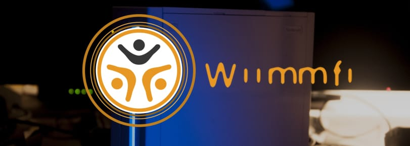

Wiimmfi
튜토리얼에 관한 질문이 있다면, Wii Mini 해킹 디스코드 서버 에 가입하거나(권장) [email protected]에 이메일을 보내세요.

Wiimmfi는 이제 작동하지 않는 닌텐도 Wi-Fi 커넥션의 대체 서비스입니다. Wiimm과 Leseratte가 제작하였습니다.
Wiimmfi를 연결하는데 오류 23904가 나타난다면, 오래된 패치를 사용합니다.
Wiimmfi와 재 연결 하려면 아래의 방법을 사용하세요.
자세한 정보는 이 페이지를 확인하세요.
다른 패쳐
Wiimmfi에 연결하는 많은 다른 방법도 있습니다. 사용 목적에 가장 적합한 것을 선택하세요.
Priiloader를 이용한 디스크 채널 자동 패치
필요한 것
- Priiloader 0.9 이상이 설치된 Wii
오래된 Priiloader를 사용하거나 설치하지 않았다면, 업데이트/설치를 위해 이 가이드를 따르세요.
방법
- Wii를 켜면서 reset 버튼을 꾹 누르세요 (Wii 미니를 사용하는 경우, USB 키보드를 연결한 뒤 esc 버튼을 누르세요).
System Menu Hacks로 이동합니다.Wiimmfi patch v4핵이 활성화되었는지 확인합니다.- 설정을 저장하고 나가세요.
핵 Wiimmfi patch v2나 Wiimmfi patch v3를 볼 수 있다면, hacks_hash.ini 파일의 최신 버전이 없는 겁니다.
여기에서 받은 뒤 SD 카드 및 USB 드라이브의 /apps/priiloader/hacks_hash.ini에 넣으세요.
그 다음, 전 단계를 반복하세요.
홈브루 (디스크) 어플리케이션
MrBean35000vr (CTGP-R, 마리오 카트 Wii 컨텐츠 팩의 제작자) 는 Wiimmfi Disc Patcher를 제작하여 디스크를 시작할 때 마다 실행해야 하지만 디스크를 삽입한 뒤 즉시 Wiimmfi 사용을 위한 패치를 적용할 수 있게 했습니다.
필요한 것
- SD 카드 및 USB 드라이브
- Auto Wiimmfi Patcher
방법
- Auto Wiimmfi Patcher를 SD 카드 및 USB 드라이브의 최상단 경로에 압축 해제하세요.
- SD 카드를 Wii에 삽입하고, Auto Wiimmfi Patcher를 홈브루 채널에서 실행하세요.
- 게임 디스크를 삽입하세요 (실행 이전 또는 이후에 삽입해도 됩니다. 크게 문제는 없습니다).
- 패치가 완료되기까지 기다리면, 시작할 겁니다!
홈브루 없이 (디스크)
Leseratte님이 Wiimmfi 패쳐에 적용할 수 있었던 Fullmetal5의 str2hax 취약점을 이용하면, Wiimmfi 패치를 Wii에 아무 홈브루 없이 작동시킬 수 있습니다.
필요한 것
- 인터넷 연결이 있는 Wii
방법
- 게임 디스크를 삽입하세요.
- 인터넷 연결 설정으로 이동하여 DNS 서버를 95.217.77.151로 변경하세요.
- WC24 사용 약관 (설정에서 “인터넷”을 누른 뒤 나타나는 세번째 버튼) 으로 이동하세요.
- WC24와 쇼핑 채널 사용을 허가하세요.
- Wiimmfi 패쳐 페이지가 나타나게 됩니다. 아니며 아직도 기본 라이선스 동의서가 보인다면, 라우터가 이 방법과 호환되지 않습니다.
- 패쳐가 로딩될 때 까지 1분 30초를 기다리세요.
- 게임은 이제 Wiimmfi 패치가 동봉되어 시작됩니다.
USB 로더를 이용한 자동 패치
USB Loader GX를 사용하고 있다면, 최신 버전으로 업데이트 하세요. 그 다음엔 Wiimmfi와 작동할 수 있는 모든 게임을 시작할 때 마다 USB 로더가 패치하는 “Wiimmfi”로 설정할 수 있는 “private server” 설정이 무조건 있을 겁니다 (Global loader options와 Game options 둘 다에)
ISO 패치
Wiimmfi로 플레이 하고 싶을 때 마다 패쳐를 작동시키기 싫고, 아마도 USB 로더를 사용하고 있는 경우에 사용합니다. 따라서, 특정 게임을 위한 몇몇을 포함한 ISO 패쳐가 만들어졌습니다.
필요한 것
- 게임의 복사본 (WBFS, ISO, cISO 및 Wii가 사용할 수 있는 형태가 지원됨).
- RiiConnect24 Patcher (Windows와 Unix)
또는 - Wiimmfi Patcher (크로스 플랫폼)
- USB 로더, cIOS, 게임을 저장할 USB (USB 로더를 사용하고 있다면 있을 겁니다)
방법
- 원하는 폴더에 패쳐를 압축 해제하고, 그 폴더에 게임의 복사본을 넣으세요.
- 당신의 OS를 위한 패치 스크립트를 실행하세요: Windows는 대부분
.bat, Mac/Linux는.sh로 끝납니다. RiiConnect24 패쳐를 사용한다면, WiiWare Patcher를 선택하고 기기를 선택 (Wii, vWii, 또는 돌핀) 하세요. - 완료되면,
wiimmfi-images폴더에서 버전을 꺼내고 (패쳐 밖의 폴더일 수도 있습니다 - ../wiimmfi-images) USB로 다시 복사하세요
WiiWare 패칭
Wiimmfi에서 플레이하기 위해 WiiWare 게임을 패치할 수 있습니다.
필요한 것
- SD 카드
- 게임의 복사본 (WAD 포맷)
- RiiConnect24 Patcher (Windows와 Unix)
또는 - WiiWare Patcher (크로스 플랫폼)
- Wii Mod Lite
단계:
- 최신버전의 WiiWare Patcher의 .zip 압축을 해제하고, WAD를 삽입하세요.
- 당신의 OS를 위한 패치 스크립트를 실행하세요: Windows는 대부분
.bat, Mac/Linux는.sh로 끝납니다. RiiConnect24 패쳐를 사용한다면, 게임별 패쳐를 선택하고 기기를 선택 (Wii, vWii, 또는 돌핀) 하세요. - 성공적으로 끝났다면, Wii Mod Lite로
wiiware-wads에 있는 WAD를 설치하세요.
기타
마리오 카트 Wii 대회
Wiimmfi는 마리오 카트 Wii의 대회에 다시 참석할 수 있게 합니다.
필요한 것
- SD 카드 및 USB 드라이브
- 마리오 카트 Wii 대회 패쳐
설명 (Wii)
- Mario Kart Wii Competition Patcher를 압축 해제하고 SD 카드의
apps폴더에 붙여넣으세요. - Wii에 SD 카드나 USB 드라이브를 삽입하십시오.
- 원본 마리오 카트 Wii를 실행하세요 (Wiimmfi 미 패치).
- 설정 -> 네트워크 설정 (또는 닌텐도 Wi-Fi 커넥션) -> 메시징 서비스로 이동하세요. 메시징 서비스가 켜져 있다면, 껐다 다시 켜세요.
- 마리오 카트 Wii 대회 패쳐를 실행하세요.
- 패쳐는 여러 저장장치의 공간에서 마리오 카트 Wii의 저장 파일을 찾고 업로드 할 겁니다. 저장 파일에 대회가 없는 경우에 대비하여 진행합니다. 당연하겠지만, 대회를 위해 Wii를 패치하기도 합니다.
Wii U를 사용한다면, Wii U에는 WiiConnect24가 비활성화 되어 있기 때문에 새 대회를 찾으려면 항상 대회 패쳐를 실행시켜야 합니다.
DS 게임
Wiimmfi는 오직 Wii 게임만을 지원하지 않습니다. 많은 DS 게임도 지원합니다. 감사하게도 nds-constraint라는 취약점은 DS 게임을 패치하지 않고도 온라인으로 플레이 할 수 있게 합니다.
필요한 것
- WEP이나 아무 보안도 없는 Wi-Fi 네트워크
가장 어려운 부분은 WEP이나 보안이 없는 Wi-Fi 네트워크를 찾는 것인데, 왜냐하면 DS 게임들은 차세대 Wi-Fi 보안 형태를 지원하지 않기 때문입니다 (“DSi 향상” 게임이거나 DSi나 3DS의 Wi-Fi 설정을 지원하는 포켓몬스터 블랙/화이트 같은 게임인 경우를 제외합니다). 하지만, 많은 라우터는 게스트 Wi-Fi 연결을 지원하고, 휴대전화나 컴퓨터에서 핫스팟을 만들 수도 있습니다. 이것에 대한 정보가 인터넷에 충분하므로, 원하는 검색 엔진으로 찾아 보세요.
방법
- 닌텐도 DS의 Wi-Fi 설정으로 이동합니다. 온라인으로 플레이하고자 하는 게임 내부에서 접근할 수 있습니다.
- 연결을 설정합니다.
- Type in
167.86.108.126as the primary DNS. - Type in
1.1.1.1as the secondary DNS. - 연결 설정을 저장하고 연결 테스트를 진행합니다. 성공적이였다면, 플레이 할 준비가 되었습니다.
마리오 카트 Wii 모드
CTGP-R
MrBean35000vr과 Chadderz는 여러 커스텀 트랙을 플레이 할 수 있게 하고 자동으로 Wiimmfi를 패치하는 커스텀 트랙 배포판인 CTGP-R을 배포했습니다. ChadSoft 웹사이트를 방문해서 다운로드 및 설명을 확인하세요.
MKW Hack Pack
PhillyG has put together a collection of custom tracks and hacks called MKW Hack Pack, and allows connections to Wiimmfi. 설정 방법이 궁금하다면, 위키 페이지를 방문하세요.
Wiimms Mario Kart Fun
Wiimm과 Leseratte는 일 년에 세 번씩 업데이트 되는 커스텀 트랙 배포판인 “Wiimms MKW Fun”을 배포했습니다. Leseratte의 LE-CODE 프레임워크에 기반했으며, Wiimmfi를 지원하며, 여러 기능들이 있습니다. 자세한 정보는 이 위키 페이지를 방문하세요.
사이트 네비게이션으로 계속하기
당신이 좋아할만한 많은 튜토리얼이 있습니다.